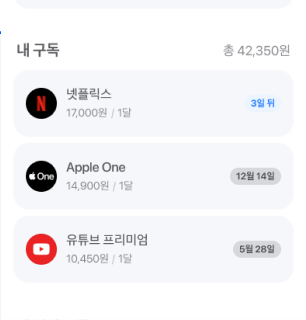
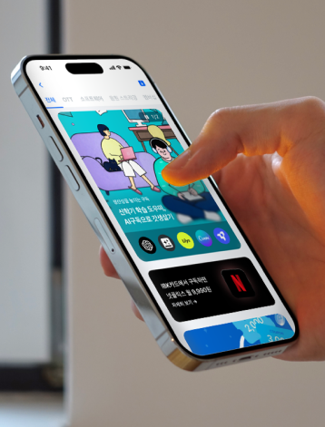
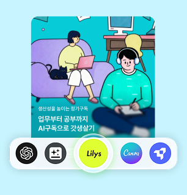
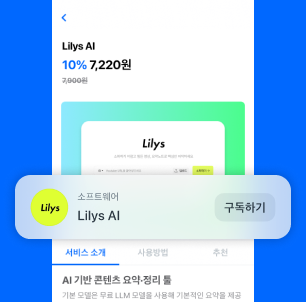
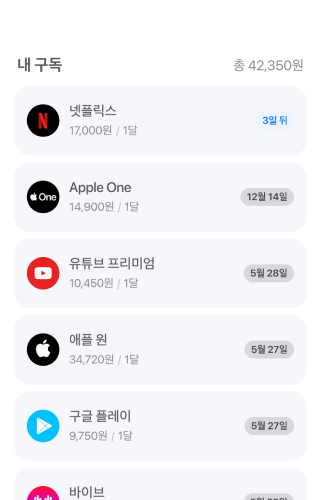
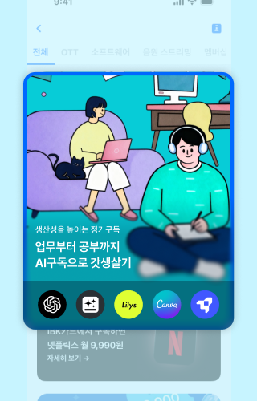
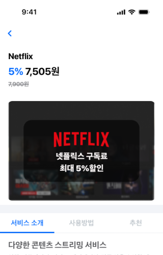
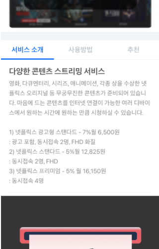
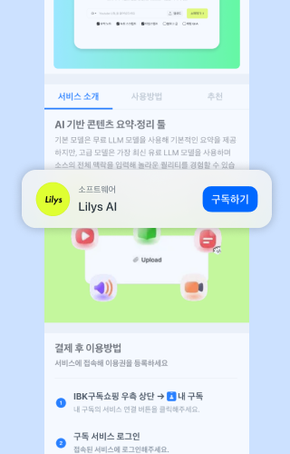

구독을 보는 화면에서 시작해요.
사용자는 현재 쓰고 있는 구독과 반복 지출을 보다가, 지금 관심 가질 만한 상품을 만나게 돼요.

IBK카드 앱의 구독관리와 구독몰이 연결돼요. 사용자가 이미 쓰고 있는 정기 지출을 바탕으로, 지금 관심 가질 만한 상품을 더 자연스럽게 보여줘요.
셀러에게는 앱 안에서 새로 만나는 판매 채널이 돼요. 상품만 모아두는 곳이 아니라, 왜 이 상품이 지금 필요한지 함께 보여주기 쉬운 자리예요.
IBK카드 앱을 쓰는 고객이 구독을 관리하다가 상품을 바로 보게 돼요.
반복 결제와 정기 지출에 익숙한 고객에게 먼저 닿을 수 있어요.
추천을 보고, 혜택을 확인하고, 구독까지 앱 안에서 매끄럽게 이어져요.

지출을 관리하는 흐름 안에서 보여주기 때문에 서비스 소개처럼 자연스럽게 이어져요.
이 구독몰은 IBK카드 앱 안에서 구독관리와 연결돼요. 사용자가 지출을 확인하는 흐름 안에서 상품을 보고, 설명을 읽고, 혜택을 확인한 뒤 구독까지 이어질 수 있어요.
사용자는 현재 쓰고 있는 구독과 반복 지출을 보다가, 지금 관심 가질 만한 상품을 만나게 돼요.

지금 쓰는 서비스와 가까운 상품이나 함께 쓰면 좋은 상품을 이어서 보여줄 수 있어요.

상품 설명과 혜택 확인 뒤에 구독까지 앱 안에서 이어져서 흐름이 끊기지 않아요.

새로운 판매 채널을 검토할 때는 감보다 근거가 먼저 보여야 해요. IBK카드 700만 고객 중 588만 개인 고객과 118만 기업 고객을 바탕으로, 카테고리별 구독 규모와 함께 보는 카테고리, 구독까지 이어지는 흐름을 확인하면서 입점 판단에 필요한 힌트를 얻을 수 있어요.
IBK카드 700만 고객 기반 안에서 카테고리별 구독 규모를 보며 우리 상품이 들어갈 만한 시장을 먼저 가늠할 수 있어요.
어떤 상품군이 함께 보이고 같이 제안되기 좋은지 확인하면서 번들이나 교차 판매 구성을 더 쉽게 잡을 수 있어요.
판매만 중요한 게 아니에요. 정산 주기와 운영 안정성까지 함께 준비돼 있어 셀러가 더 안심하고 시작할 수 있어요.
어디에서 보고, 어디에서 비교하고, 어디에서 구독으로 이어지는지 확인하면서 운영 방식을 더 구체적으로 조정할 수 있어요.
구독관리에서 시작해 추천을 보고, 상품을 확인하고, 혜택을 본 뒤 구독까지 이어져요. 셀러 상품은 이 흐름 안에서 자연스럽게 소개돼요.
사용자는 앱에서 현재 구독과 반복 지출을 확인해요. 셀러 상품은 이 흐름 안에서 처음 보여지기 시작해요.

지금 쓰는 서비스와 가까운 상품이나 함께 보면 좋은 상품을 자연스럽게 이어서 보여줘요.

어떤 서비스인지, 어떤 구성이 있는지, 어떤 고객에게 맞는지 한 화면에서 쉽게 이해할 수 있게 보여줘요.

IBK카드 혜택과 상품 혜택을 함께 보여줘서, 지금 구독하면 좋은 이유를 더 쉽게 전할 수 있어요.

관심이 생긴 흐름이 끊기지 않아서, 상품 이해부터 구독 시작까지 더 매끄럽게 이어질 수 있어요.

셀러가 가장 먼저 궁금해하는 질문을 한 번에 볼 수 있게 정리했어요. 588만 개인 고객과 118만 기업 고객 모두에게 상품을 판매할 수 있어서, 생활형 구독부터 사업 운영과 연결되는 상품까지 폭넓게 검토할 수 있어요.
일상에서 자주 쓰는 서비스 중심으로, 생활에 바로 닿는 상품을 제안하기 좋아요.
매장과 사무 운영에 계속 필요한 서비스 중심으로 제안할 수 있어요.
IBK카드 앱 안에서 더 맞는 고객에게 상품을 보여주고, 한 번 보고 끝나지 않는 구독 운영을 시작해보세요. 입점 상담에서 카테고리와 상품 구성부터 함께 정리해드릴게요.